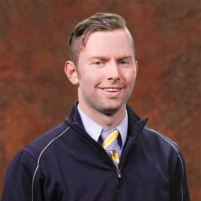

Originally from Northern Virginia, I discovered Philadelphia in 2008 when I opted to play baseball for the Temple Owls.
Upon graduation, I moved to San Diego to begin my sales career with the San Diego Padres.
From there, I met a few individuals involved with IT sales at an antivirus company called ESET and began working at their headquarters.
After almost two years on the west coast, I made pilgrimage back to Philadelphia and continued to work as an account manager for an IT company.
Since my move back to the city of brotherly love, my life has taken shape in a way I never thought possible.
In the spring of 2015, I began drumming in a prog-rock band called Tektonic.
Since then, I have had the pleasure of meeting numerous individuals in the Philly music scene who helped shape my abilities as a musician.
Those relationships also made me realize what it was in life I needed to pour my time and effort into, which then lead me to research coding boot camps in the area.
Which brings us to the current day where I am beginning to learn just how much effort and skill goes into being a web-developer.
I have not been this excited to tackle anything new in some time, and I am eager to see what the next step will bring!